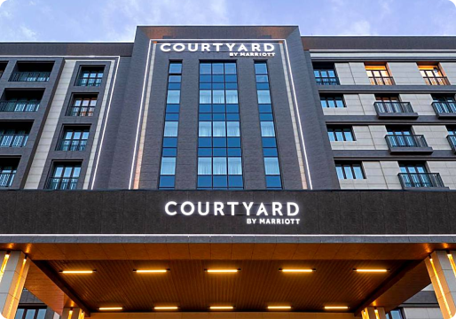

.svg)

1.Wyndham mehmonxonasi
Tinchlantiruvchi muhit. Qulay joylashuv. Toshkent shahri markazida joylashgan ushbu 5 yulduzli mehmonxonada sport zali, katta yopiq va ochiq basseynlar, sauna va turk hammomi mavjud. Wyndham Tashkent mehmonxonasida bepul Wi-Fi mavjud. «Wyndham Tashkent» mehmonxonasi keng xonalar klassik va zamonaviy dizaynga ega. Barcha xonalar alohida boshqariladigan konditsionerga ega bo’lib, minibar va qahva va choy tayyorlash uchun jihozlarni o’z ichiga oladi. «Turkuaz» restoranida har kuni ertalab bufet nonushtasi taqdim etiladi. Unda mehmonlar xalqaro va o’zbek taomlarining xilma-xilligidan bahramand bo’lishlari, shuningdek, pianinoning jonli sadosini tinglashlari mumkin. Ish uchrashuvlari va korporativ tadbirlarni mehmonxonaning to’liq jihozlangan konferentsiya zallarida o’tkazish mumkin.
2.Hilton Tashkent City
Juda noyob, va ajoyib ichki dizaynga ega. 2019-yil oktyabr oyida ochilgan. Barcha xonalar konditsioner, minibar, bepul Wi-Fi va televizor bilan jihozlangan. Maxsus hammomda alohida dush va hammom, fen mavjud. Ovqatlanish uchun «Shosh» restoranida har kuni nonushta, tushlikda bo’lsa o’zbek va xalqaro taomlar taqdim etiladi. Terasda joylashgan “Tumbler Bar” an’anaviy bar taomlarini taklif qiladi. “Lobby Lounge” mehmonlarga bir piyola choy yoki kofe ustida ish yoki do’stona uchrashuv o’tkazish imkoniyatini taqdim etadi. Hilton Tashkent City mehmonxonasida 24 soat xona xizmati va fitnes markazi mavjud. Uchrashuv xonalari, turli tadbirlar uchun zal mavjud. Mehmonxona Xalqlar Do’stligi metro bekatigacha 10 daqiqalik piyoda yo’l. Aeroportdan 7 km va poezd stantsiyasidan 5 km masofada joylashgan.
3.Hotel Inspira-S Tashkent
2021-yil aprel oyida ochilgan. Hotel Inspira-S Tashkent mehmonxonasi restoran, fitnes markazi, bar va umumiy dam olish xonasiga ega. Bu mehmonxonada bankomat va bagaj saqlash uchun joy hamda bepul Wi-Fi mavjud. Mehmonxonada yopiq basseyn, hammom xizmati mavjud. Mehmonxona choynak, muzlatgich, minibar, seyf, televizor va xususiy hammom bilan jihozlangan konditsionerli xonalar bilan ta’minlaydi. Hotel Inspira-S Tashkent mehmonxonasining har bir xonasida choyshab va sochiqlar mavjud. Mehmonlar kontinental nonushta qilishlari mumkin. Inspira-S Tashkent mehmonxonasida sog’lomlashtirish zonasi, sauna mavjud. Bepul avtoturargoh va biznes markazi, shuningdek, 24 soatlik qabulxona mavjud.
4.Courtyard by Marriott Tashkent
2020-yil noyabr oyida ochildi. Courtyard by Marriott Tashkent Toshkentda restoran, fitnes markazi, bar va umumiy dam olish xonasiga ega. Mehmonlar uchun yopiq suzish havzasi va avtomobil ijarasi xizmati mavjud. Mehmonxonada 24 soatlik qabulxona, mehmonlar uchun valyuta ayirboshlash xizmati mavjud. Mehmonxonadagi barcha mehmon xonalari o’tirish maydoni bilan jihozlangan. Har bir xona konditsioner, seyf va televizor bilan jihozlangan, Courtyard by Marriott Tashkentning ayrim xonalarida esa balkon mavjud. Mehmonxona mehmonlari bufet nonushtasidan bahramand bo’lishlari mumkin. Courtyard by Marriott Tashkent mehmonxonasi issiq vanna va terasli 4 yulduzli turar joyni taklif etadi. Mehmonlar biznes markazidan foydalanishlari yoki snack barda dam olishlari mumkin.
